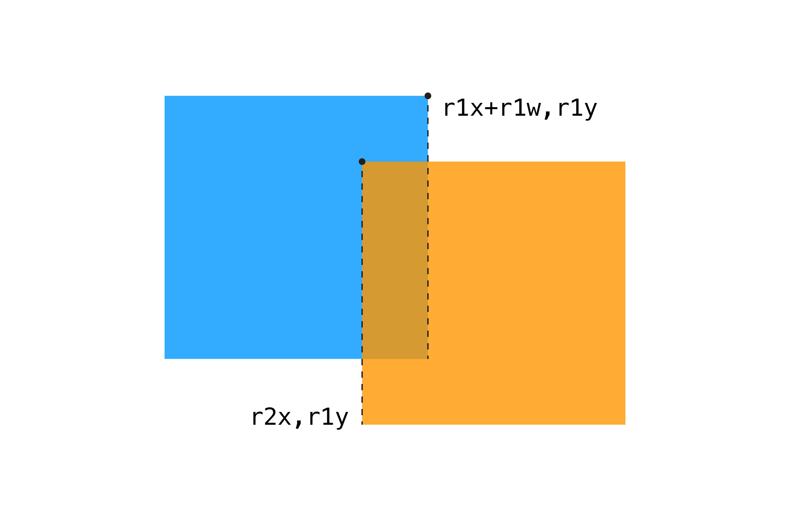
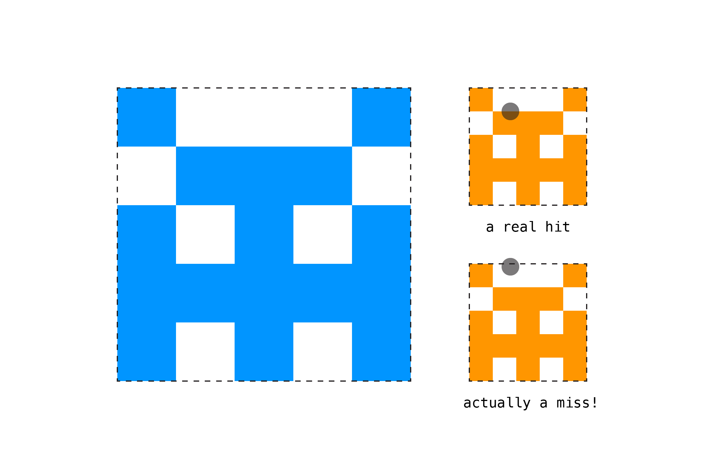

Перейти від визначення перетину точки і прямокутника до визначення перетину двох прямокутників легко, але if-оператор при цьому починає ставати досить довгими. Скажімо, у нас є два квадрати, r1 and r2, з положеннями та розмірами, встановленими як у попередньому прикладі. Тепер ми маємо перевірити наступне:
Чи ПРАВИЙ край r1 ПРАВІШЕ від ЛІВОГО краю r2?
Чи ЛІВИЙ край r1 ЛІВОРУЧ від ПРАВОГО краю r2?
Чи НИЖНІЙ край r1 НИЖЧЕ від ВЕРХНЬОГО краю r2?
Чи ВЕРХНИЙ край r1 ВИЩЕ від НИЖНЬОГО краю r2?
Так, це не зовсім інтуїтивні умови 😖. Тут потрібен деякий час, щоб зрозуміти чому саме так. Також, щоб краще зрозуміти потрібний набір правил можна вирізати два прямокутники й погратися ними, накладаючи один на одного. А ще візьміть олівець з аркушем паперу та крок за кроком візуалізуйте свої думки щодо цих або інших правил. Через декілька хвилин ви почнете розуміти що до чого. А коли у вас зійдеться останній пазл щодо усіх цих умов, то ви отримаєте надзвичайне задоволення від свого розуму. Можливо зображення трохи допоможе: (Від перекладача: після оригінального підходу я запропоную схожий, проте більш інтуїтивний підхід стосовно цього питання):

Для початку перевіримо чи правий край r1 правіше від лівого краю r2:
const r1RightEdge = r1x + r1w;
if (r1RightEdge >= r2x) {
// правй край r1 правіше лівого краю r2
}
Тепер ми можемо розширити цей початок коду, перевіривши всі чотири сторони:
if (
r1x + r1w >= r2x && // правий край r1 правіше лівого краю r2
r1x <= r2x + r2w && // лівий край r1 лівіше правого краю r2
r1y + r1h >= r2y && // нижній край r1 нижче верхнього краю r2
r1y <= r2y + r2h // верхній край r1 вище нижнього краю r2
) {
return true;
}
return false;
Насправді можна піти іншим шляхом роздумів. Шляхом від зворотного. Як на мене, цей підхід більш інтуїтивний. Отже, підготуйте для кращого сприйнятя і додаткової візуалізації два прямокутники й по черзі перевіряйте нові умови. На цей раз ми розглянемо умови які говорять нам про те коли прямокутники не перетинаються. Таких правил теж чотири. Отже, ми матимемо колізію лише якщо жодне з правил відсутності перетину не пройде. Прямокутники не перетинаються, якщо:
1) лівий край першого прямокутника знаходиться за правим краєм другого;
2) правий край першого прямокутника знаходиться перед лівим краєм другого;
3) верхній край першого прямокутника знаходиться нижче нижнього краю другого;
4) нижній край першого прямокутника знаходить вище верхнього краю другого;
Тобто початково ми будуємо умови не про наявність перетину, а про його відсутність. Якщо хоча б одна з чотирьох умов відсутності справджується, тоді перетину немає і в операторі if ми повертаємо false, а інакше вважаємо, що колізія є і тоді за замовчуванням повертаємо true. Код схожий на попередній і такі умови як мінімум легше пригадати.
if (
r1x >= r2x + r2w || // лівий край r1 знаходиться за правим краєм r2
r1x + r1w <= r2x || // правий край r1 знаходиться перед лівим краєм r2
r1y >= r2y + r2h || // верхній край r1 знаходиться нижче нижнього краю r2
r1y + r1h <= r2y // нижній край r1 знаходиться вище верхнього краю r2
) {
return false;
}
return true;
Хоча математика для цього прикладу базується на простому додаванні, це одна з найскладніших колізій для більшості людей, до якої потрібно звикнути. Попрактикувавшись, ви зможете краще уявити це у своїй голові. А підготовлена функція значно спростить перевірку колізій! І не пам'ятайте, що замальовки на аркуші паперу, можуть значно допомогти вам при написанні вашого коду.
Повний код прикладу:
// змінні для положення і розмірів рухомого квадрата
let s1x = 0;
let s1y = 0;
let s1w = 30;
let s1h = 30;
// змінні для положення і розмірів другого статичного квадрата
let s2x = 200;
let s2y = 100;
let s2w = 200;
let s2h = 200;
function setup() {
createCanvas(window.innerWidth, window.innerHeight);
noStroke();
// визначення положення координат для лівого верхнього кута другого квадрата, так квадрат був по центру полотна
s2x = (width - s2w) / 2;
s2y = (height - s2h) / 2;
}
function draw() {
background(255);
// оновлення координат рухомого квадрата координатами курсора
s1x = mouseX;
s1y = mouseY;
// результат перевірки на зіткнення
const isHit = isRectWithRectCollides(s1x, s1y, s1w, s1h, s2x, s2y, s2w, s2h);
// при зіткненні змінюємо колір заливки
if (isHit) {
fill(255, 150, 0);
} else {
fill(0, 150, 255);
}
// малюємо рухомий квадрат
rect(s2x, s2y, s2w, s2h);
// малюємо другий статичний квадрат
fill(0, 150);
rect(s1x, s1y, s1w, s1h);
}
// перевірка на перетин між двома прямокутниками
function isRectWithRectCollides(r1x, r1y, r1w, r1h, r2x, r2y, r2w, r2h) {
// чи сторони прямокутників перетинаються між собою?
if (
r1x + r1w >= r2x && // правий край r1 правіше лівого краю r2
r1x <= r2x + r2w && // лівий край r1 лівіше правого краю r2
r1y + r1h >= r2y && // нижній край r1 нижче верхнього краю r2
r1y <= r2y + r2h // верхній край r1 вище нижнього краю r2
) {
return true;
}
return false;
}
// перевірка на перетин між двома прямокутниками
// альтернативний підхід
function isRectWithRectCollides_intuitive(r1x, r1y, r1w, r1h, r2x, r2y, r2w, r2h) {
// чи сторони прямокутників НЕ перетинаються між собою?
if (
r1x >= r2x + r2w || // лівий край r1 знаходиться за правим краєм r2
r1x + r1w <= r2x || // правий край r1 знаходиться перед лівим краєм r2
r1y >= r2y + r2h || // верхній край r1 знаходиться нижче нижнього краю r2
r1y + r1h <= r2y // нижній край r1 знаходиться вище верхнього краю r2
) {
return false;
}
return true;
}
Тут варто зазначити дві важливі речі. По-перше, хоча в останніх двох прикладах використовуються квадрати, з цим кодом працюватиме будь-який прямокутник. По-друге, цей алгоритм передбачає, що ви використовуєте стандартний режим малювання прямокутників, де перші два параметри відповідають за лівий верхній кут прямокутника, що малюється, а останні два визначають йоно ширину і висоту. У p5js за цей режим за замовчуванням відповідає функція rectMode(CORNER). Якщо ви захочете використовувати інший режим малювання прямокутників, скажімо rectMode(CENTER), вам потрібно буде трохи змінити цей алгоритм і це цікаве завдання для розминки, яке ще буде згадано у наступному розділі із завданнями 2 через кілька розділів.

Подібно до прикладу Круг і Круг, зіткнення Прямокутник і Прямокутник можна використовувати для малювання "обмежувальних рамок" навколо складніших форм. Однак те, що ви отримуєте в продуктивності, втрачаєте в точності. Якщо ви коли-небудь грали в гру і розчаровано кричали: "Я ж точно влучив!", тоді ви напевно зіткнулися з обмежувальними рамками, які не зовсім узгоджуються з об’єктами, а значить не точно їх повторюють. В таких випадках потрібно знаходити правильний баланс між фактичною правильністю і продуктивністю коду та потребами користувача.
Далі: Круг і Прямокутник